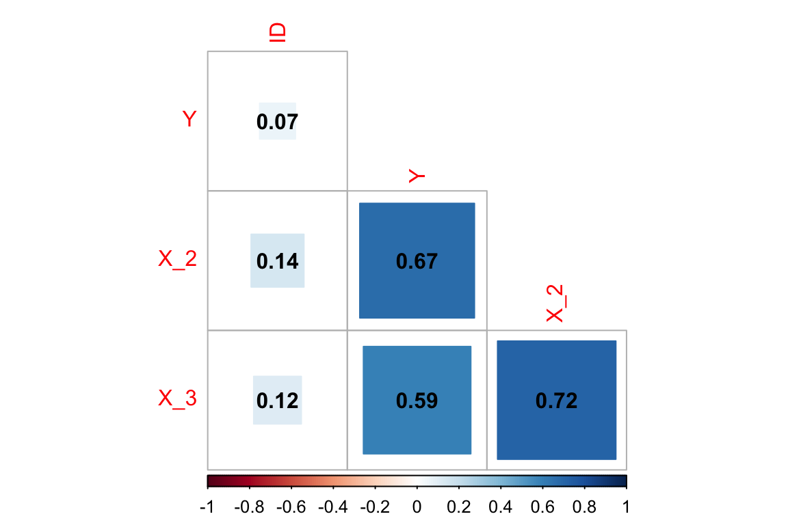
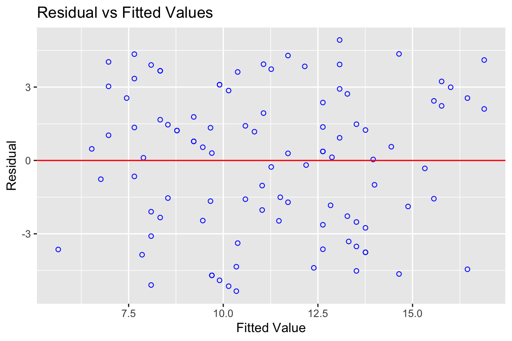
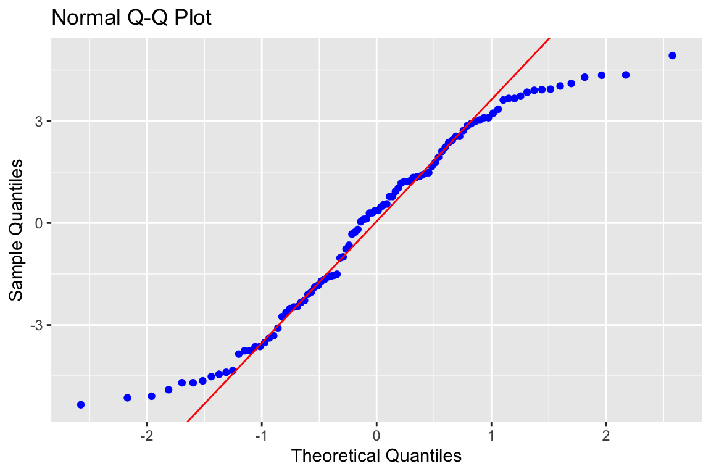
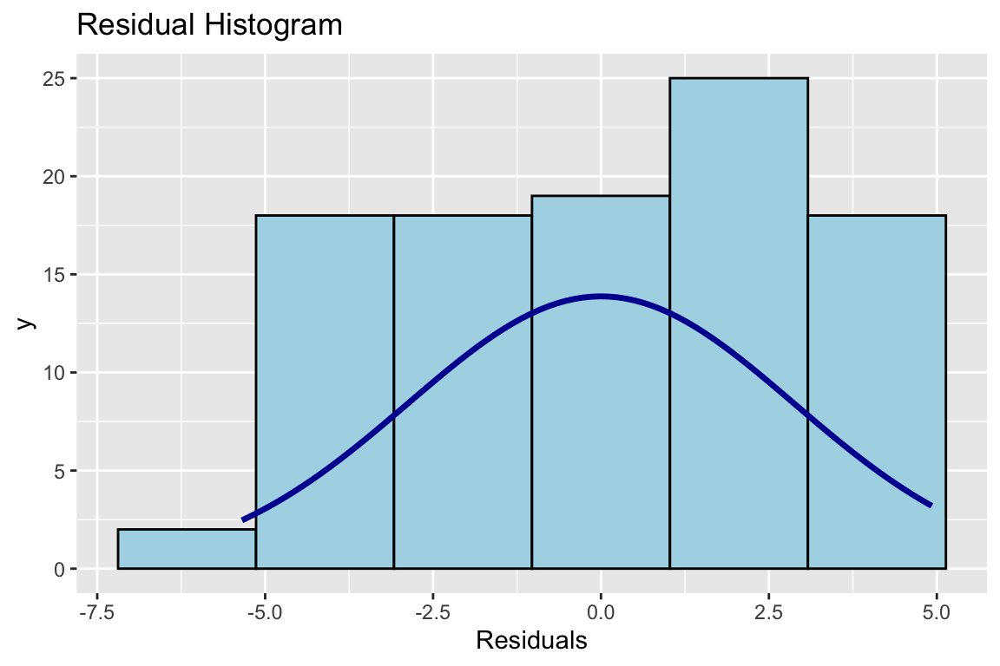

3 Regression in R
Im Video wird diese Seite noch kommentiert, mit der Excel variiert und etwas Hintergrund erklärt. Die Werte der Regressionsrechnung sind andere als auf der Seite hier, weil von Excel bei jedem Durchlauf etwas andere Werte herauskommen. Schauen Sie sich am besten das Video an und versuchen Sie dann, die Outputs der etwas veränderten Werte zu interpretieren.
Regressionen können in R mit Hilfe des Linearen Modell berechnet werden. Der Befehlsaufruf für das Lineare Modell ist lm(). In diesen Aufruf für das lineare Modell muss das Modell selbst geschrieben werden. Wenn also das Modell wäre:
\[\begin{align} Y_i&=b_1 + b_2X_{i2} + b_3X_{i3}+e_i \end{align}\]
… dann wäre das der Befehlsaufruf in R: lm(Y ~ X_2 + X_3)
Es muss dem System also nur gesagt werden, welche Variable erklärt werden soll, also welche die AV ist (sie steht links vom «~») und dann muss man rechts vom «~» R mitteilen, welches die unabhängigen Variablen (UVs) sind, mit denen die AV erklärt werden soll. Die Laufindizes der Summen, also die i’s braucht man nicht, weil R schon klar ist, dass es alle Werte einer Variablen nehmen soll (wenn das mal nicht der Fall ist, muss man es R mitteilen, indem man den Datensatz filtert). Für die b’s geht R davon aus, dass für jede Variable ein Regressionskoeffizient (Schätzer bzw. estimator) anhand der Daten berechnet bzw. geschätzt werden muss. Zu guter Letzt braucht man R auch nicht erklären, dass Residuen (die e’s) übrig bleiben werden. Das ist einfach so. Darum ist die Formel in R so schön kurz. So spezifizieren Sie das Modell. Bevor wir das tun können, brauchen wir aber Daten, für die ein Modell spezifiziert werden kann.
Dafür laden wir einen Datensatz, den ich als Spieldatensatz in Excel gebastelt habe.
Mit dieser Exceldatei starten wir mal:
In können Exceldateien mit dem Paket readxl in R «importiert» werden (schauen Sie mal, ob in Ihrem R-Studio oben ein gelber Streifen auftaucht, wenn Sie folgende Zeile schreiben; in dem Fall klicken Sie oben darauf, dass das Paket, was fehlt, noch installiert werden muss.).
# Lade die Exceldatei "EinfachsteRegression.xlsx"
# mit dem Paket readxl
# und daraus dem Befehl read_excel
# DATEN <- readxl::read_excel("data/EinfachsteRegression.xlsx")
# Besser hier noch speichern, damit die Werte aus der Excel nicht jedes Mal andere sind. In Excel wird ja jedes Mal neu "gewürfelt", wenn die Datei geöffnet wird.
# saveRDS(DATEN, file = "data/EinfachsteRegression.RDS")
DATEN <- readRDS(file = "data/EinfachsteRegression.RDS")
# Zeige mal die ersten 10 Zeilen des Datensatzes
DATEN
## # A tibble: 100 × 4
## ID Y X_2 X_3
## <dbl> <dbl> <dbl> <dbl>
## 1 1 13 3 5
## 2 2 7 1 5
## 3 3 10 2 4
## 4 4 14 10 7
## 5 5 5 3 5
## 6 6 19 10 9
## # … with 94 more rowsÜber die Variablen im Datensatz wissen wir ein paar Dinge. Es gibt 100 Fälle, also 100 Zeilen im Datensatz. X_2 ist eine Zufallszahl, die Werte zwischen 0 und 10 annehmen kann. Wir können steuern, dass X_2 und X_3 (ein bischen) miteinander zusammenhängen, indem X_3 je Zeile die Summe aus X_2 und einer Zufallszahl ist. Und dann bilden wir Y als Summe aus einer Konstanten (b_1 = 5) + 0.8*X_2 + 2*X_3 + noch einer Zufallszahl zwischen 0 und 10 (wozu das gut ist, erkläre ich im Video und spiele damit etwas herum :-). Jetzt können wir uns anschauen, wie diese Variablen miteinander zusammenhängen, wenn wir eine Regression rechnen:
# Das Modell ist also recht einfach
Modell <- lm(Y ~ X_2 + X_3,
data = DATEN) # und wird für diese Daten angepasst,
# es werden also die Koeffizienten gesucht.
# Mit diesem Befehl kann man direkt
# einen vergleichsweise informativen Output erzeugen:
summary(Modell)
##
## Call:
## lm(formula = Y ~ X_2 + X_3, data = DATEN)
##
## Residuals:
## Min 1Q Median 3Q Max
## -5.3455 -2.3656 0.3684 2.4642 4.9255
##
## Coefficients:
## Estimate Std. Error t value Pr(>|t|)
## (Intercept) 5.6408 0.8166 6.908 5.16e-10 ***
## X_2 0.6823 0.1395 4.890 4.00e-06 ***
## X_3 0.4430 0.2100 2.109 0.0375 *
## ---
## Signif. codes: 0 '***' 0.001 '**' 0.01 '*' 0.05 '.' 0.1 ' ' 1
##
## Residual standard error: 2.904 on 97 degrees of freedom
## Multiple R-squared: 0.4783, Adjusted R-squared: 0.4676
## F-statistic: 44.47 on 2 and 97 DF, p-value: 1.968e-14In dem Output steht als erstes nochmal das Modell, wie es angefordert wurde, also wie der Call war: lm(formula = Y ~ X_2 + X_3, data = DATEN). Darunter stehen ein paar Statistiken für die Residuen. Ich habe keine Ahnung, warum das die Macher dieser Funktion wichtig fanden, dass das da steht.
Wichtiger sind die Koeffizienten (Coefficients): In der ersten Spalte die Variablennamen. In der zweiten Spalte die «Estimates», was schlicht die B’s in der Regression sind. Dahinter stehen die Standardfehler der B’s. In der dritten Spalte (man muss etwas genauer hinsehen) steht der t-Wert als «t value». Direkt dahinte (was sinnvoll ist) stehen die p-Werte mit der Spaltenüberschrift «Pr(>|t|)» (Jesus!), also die Wahrscheinlichkeit, dass das gefundene oder ein höheres t rein zufällig vorkommt, obwohl in Wirklichkeit die Nullhypothese gilt, dass das jeweilige zu schätzende unbekannte \(\beta\) in der Auswahlgesamtheit gleich 0 ist.
Darunter steht eine Art Legende für die Sternchen, also die Signifikanz. Diese Sternchen sind praktisch, wenn mal jemand 5% Irrtumswahrscheinlichkeit aushält (p < 0.05, dass die \(H_0\) gilt, bei 95%-igem Signifikanzniveau), aber andere p < 0.01. Was wir aber eigentlich nicht wollen, ist das Signifikanzen gesteigert werden. Wir sind (und damit Sie) standardmässig auf 95%-iges Signifikanzniveau festgelegt und schauen nur, ob der p-Wert über oder unter .05 liegt (das p kann nur von 0 bis 1 gehen, und darum wird die führende 0 oft weggelassen - das sieht auch cooler aus). Unter der Koeffiziententabelle stehen die Erläuterungen der Sternchen wie als Fussnote. Die sind so schräg angelegt, mit der 0 am Anfang und 1 am Ende, bei denen ich auch nicht weiss, warum und wofür. Es ist auch nicht ganz eindeutig, ob 0.05 nun über ein Sternchen oder den unglücklichen Punkt gekennzeichnet sein soll. Lesen Sie einfach die p-Werte in der Spalte Pr(>|t|). Da sehen Sie ja, welcher kritische Wert von p gerade unterschritten wird. Wenn Sie einen Bericht schreiben, dann geben Sie, wenn überhaupt, nur ein Sternchen an, wenn Ihre Ergebnisse signifikant sind. Normalerweise ist das der Fall abei p < .05. Das ist sowas wie der Standard. Wenn Sie strenger sein wollen, weil es gefährlich ist fälschlich eine Signifikanz anzunehmen, dann nehmen Sie eher .01 und wenn Sie eine kleine Stichprobe haben und sehr innovativ sind und sowieso noch eine grössere Studie gemacht werden soll, dann können Sie auch mal .1 als Signifikanzgrenze nehmen.
Die letzten Zeilen des Summary-Outputs sind der Modellgüte gewidmet. Die erste Zeile können Sie erstmal ignorieren. Das sind nur Zahlen, die in der zweiten Zeile verrechnet wurden. Da steht das \(R^2\). Also das Bestimmtheitsmass. Das Adjusted R-squared liegt schon bei 100 Fällen sehr nahe am normalen \(R^2\). Sie können sich merken, dass Sie nur dann auf das Adjusted R-squared zurückgreifen, wenn es gerundet in der ersten Nachkommastelle von \(R^2\) abweicht (liegt immer drunter). In der letzten Zeile dieses Outputs steht die F-Statistic, wobei Sie hier sicher auch Mühe haben, den F-Wert an sich zu interpretieren, das können die Wenigsten. Das brauchen Sie auch nicht, weil Ihnen am Ende wieder ein p-Wert ausgegeben wird. Der sagt hier, wie wahrscheinlich der F-Wert von vorne auftritt, wenn die \(HK_0\) gilt, dass das gesamte Modell keine Varianz der AV erklärt, also wir durch die UVs X_2 und X_3 genau Null über Y lernen können.
Nennen Sie die Elemente, die in R angegeben werden müssen, damit ein Modell geschätzt werden kann?
3.1 Alternative Ausgaben für die Regressionsanalysen mit Pakten
Sie merken, es ist schon wieder alles so zerrissen. Gerne hätten wir doch eine Regressionsanalyse, wo alles drin ist, was wir wollen. Also auch die standardisierten Regressionskoeffizienten, die std. BETAS und vielleicht die Konfedenzintervalle für dieses BETAS. Das finden wir im Paket sjplot.
# Mache eine Regressionstabelle
# mit dem Paket sjPlot und dem Befehl tab_model()
sjPlot::tab_model(Modell)| Y | |||
|---|---|---|---|
| Predictors | Estimates | CI | p |
| (Intercept) | 5.64 | 4.02 – 7.26 | <0.001 |
| X 2 | 0.68 | 0.41 – 0.96 | <0.001 |
| X 3 | 0.44 | 0.03 – 0.86 | 0.037 |
| Observations | 100 | ||
| R2 / R2 adjusted | 0.478 / 0.468 | ||
Die «Predictors» sind die Variablen, die Estimates sind die b. Das CI ist das Konfidenzintervall der b und p ist der p-Wert. Unter der Tabelle steht das Bestimmtheitsmass \(R^2\). Das sieht also schon ganz gut aus, aber ich hätte gerne die standardisierten Regressionskoeffizienten, die BETAS statt der b’s (Estimates).
# Passe weiter an.
sjPlot::tab_model(Modell,
show.std = TRUE, # zeige die standardisierten Koeffizienten
show.est = FALSE, # zeige die unstandardisierten estimates nicht
show.r2 = TRUE # zeige R^2
)| Y | |||
|---|---|---|---|
| Predictors | std. Beta | standardized CI | p |
| (Intercept) | -0.00 | -0.14 – 0.14 | <0.001 |
| X 2 | 0.51 | 0.31 – 0.72 | <0.001 |
| X 3 | 0.22 | 0.01 – 0.43 | 0.037 |
| Observations | 100 | ||
| R2 / R2 adjusted | 0.478 / 0.468 | ||
Jetzt stehen an der Stelle der «Estimates» die standardisierten Regressionskoeffizienten mit der Bezeichnung «std. Beta», was ein bischen doppelt gemoppelt ist, weil «BETA» die Kennung für die standardisierten Regressionskoeffizienten ist. Die Konfidenzintervalle CI beziehen sich jetzt auch auf die «std. Beta». Der p-Wert ist noch derselbe - da kann ja auch nichts anderes rauskommen. Mit einem anderen Paket können wir uns auch eine ausführlichere «Summary» erzeugen. Das ist dann sinnvoll, wenn Sie sowieso in Word ihre Arbeit schreiben und die Werte aus R in ordentliche Tabellen in Word eintragen (so gut es geht).
# Sehr ausführliche Ausgaben Modellgüte und Koeffizienten.
olsrr::ols_regress(Modell)
## Model Summary
## --------------------------------------------------------------
## R 0.692 RMSE 2.904
## R-Squared 0.478 Coef. Var 25.838
## Adj. R-Squared 0.468 MSE 8.434
## Pred R-Squared 0.446 MAE 2.465
## --------------------------------------------------------------
## RMSE: Root Mean Square Error
## MSE: Mean Square Error
## MAE: Mean Absolute Error
##
## ANOVA
## --------------------------------------------------------------------
## Sum of
## Squares DF Mean Square F Sig.
## --------------------------------------------------------------------
## Regression 750.123 2 375.061 44.469 0.0000
## Residual 818.117 97 8.434
## Total 1568.240 99
## --------------------------------------------------------------------
##
## Parameter Estimates
## ------------------------------------------------------------------------------------
## model Beta Std. Error Std. Beta t Sig lower upper
## ------------------------------------------------------------------------------------
## (Intercept) 5.641 0.817 6.908 0.000 4.020 7.261
## X_2 0.682 0.140 0.515 4.890 0.000 0.405 0.959
## X_3 0.443 0.210 0.222 2.109 0.037 0.026 0.860
## ------------------------------------------------------------------------------------Da haben wir jetzt mehr als wir brauche, finden aber fast alles, was wir suchen (leider TOL und VIF nicht). Da gucken wir uns gleich an.
3.2 Checks der Voraussetzungen
3.2.1 Multikollinearität
Wir wissen aus der Konstruktion der Excel-Datei, dass die UVs X_2 und X_3 miteinander korrellieren. Das können wir uns einfach mal als Korrelation anschauen.
# nehme die Daten des Datenobjekts "DATEN"
DATEN |> # ... und pipe (|>, mache also
# mit dem Arbeitsschritt der nächsten Zeile weiter)
cor()
## ID Y X_2 X_3
## ID 1.00000000 0.06560959 0.1430166 0.1161319
## Y 0.06560959 1.00000000 0.6740839 0.5913754
## X_2 0.14301664 0.67408390 1.0000000 0.7174257
## X_3 0.11613194 0.59137538 0.7174257 1.0000000In der Korrelation kann man sehen, dass X_2 und X_3 recht stark korrelieren. Schön anzusehen ist das allerdings nicht. Darum gleich nochmal schöner:
DATEN |> # nehme DATEN und ...
cor() |> # berechne die Korrelation und mache dann noch weiter
corrplot::corrplot(type = "lower", # nimm mal nur die unter der Diagonalen
method = "square", # Quadrate statt Kreise
addCoef.col = 'black', # füge mal die Korrelationskoeffizienten hinzu
diag = FALSE , # Die Einsen in der Diagonale lass mal weg (Korrelationen der Variablen mit sich selbst)
)
OK, also wie sehen, dass X_2 und X_3 stark miteinander korrelieren! Das muss Multikollinearität geben. Oben in dem Summary-Output der Regression konnten wir das noch nicht sehen. Leider produziert die Standard-lm die Toleranzwerte und VIF-Werte nicht. Wir können die aber anfordern:
## Es gibt ein Paket "olsrr" für die Prüfung der OLS-Voraussetzungen,
## wo man sich den VIF und die Toleranz rauslassen kann:s
## Dafür wird also das Paket "olsrr" benötigt.
## Entweder sie werden direkt gefragt, ob Sie es installieren möchten
## oder Sie gehen auf Tools -> Install Package und holen es sich.
olsrr::ols_vif_tol(Modell)
## Variables Tolerance VIF
## 1 X_2 0.4853003 2.06058
## 2 X_3 0.4853003 2.06058Die Toleranz ist das \(R^2\), wenn die jeweilige UV quasi als AV einer Regression genommen werden würde und alle übrigen UV als UVs. Der VIF ist der «Varianzinflationsfaktor» und schlicht der Kehrwert (1/\(R^2\)) der Toleranz.
3.2.2 Homoskedastizität
Die Annahme der Homoskedastizität bedeutet, dass die Streuung der Residuen, also der Werte um die Regressionsgerade nicht mit den vorhergesagten oder den UVs zusammenhängen sollte. Sie sollten immer recht gleichmässig (homoskedastisch) um vorhergesagten Werte (die Regressionsgerade) streuen. Es sollen keine kurvenartigen Gebilde sichtbar werden und keine Trichter in irgendeine Richtung.
# Plotte die geschätzten Werte auf der Regressionsgeraden (Y-Hut)
# auf der X-Achse und die Residuen auf der Y-Achse
olsrr::ols_plot_resid_fit(Modell)
Wenn wir die Residuen gegen die geschätzten Werte plotten, dann deutet nichts auf einen kurvlinearen Verlauf hin. Wenn der da wäre, würden wir eine recht klare Kurvenverteilung sehen. So eine Beziehung gibt es in der Regel nicht einfach zufällig und da wir so etwas nicht in die Daten imputiert haben, ist es eben auch nicht drin. Gut so. Eine Art Trichter sehen wir auch nicht, also ist die Streuung der Fehler um die Gerade überfall ungefähr gleich.
Wir können uns auch Tests für die Voraussetzungen rausgeben lassen. Homoskedastizität kann mit dem Breusch-Pagan-Test geprüft werden.
# Führe einen Breusch-Pagan-Test aus
olsrr::ols_test_breusch_pagan(Modell)
##
## Breusch Pagan Test for Heteroskedasticity
## -----------------------------------------
## Ho: the variance is constant
## Ha: the variance is not constant
##
## Data
## -----------------------------
## Response : Y
## Variables: fitted values of Y
##
## Test Summary
## ----------------------------
## DF = 1
## Chi2 = 0.0161833
## Prob > Chi2 = 0.8987714Der ist in diesem Fall nicht signifikant. Oben steht, dass wenn die H0 beibehalten werden kann, dann wird die Varianz der Fehler als konstant über die Werte der gefitteten Werte der AV betrachtet. Ist ok.
3.2.3 Normalverteilung der Residuen
Die Normalverteilung der Residuen kann man sich mit dem Normal-Q-Q-Plot ansehen (manchmal auch nur Q-Q oder Resid-QQ). Wenn die Residuen perfekt normalverteilt wären, dann lägen die blauen Punkte auf der Geraden.
# Führe einen Normal-Q-Q-Plot aus
olsrr::ols_plot_resid_qq(Modell)
Also gut, der Normal-Q-Q-Plot sagt deutlich, dass die Residuen nicht normalverteilt sind. Das liegt vor allem daran, dass die Verteilungen in der Excel mit einfachen Zufallszahlen gemacht wurden und nicht mit normalverteilten Variablen. Da wir auch nicht so viele Fälle haben (100), gibt es so eine Kurve. Das ist für die Tests, die bekannte Verteilungsannahmen annehmen, nicht so toll. Wir müssen mit den Interpretationen unserer t-Test und F-Tests mindestens vorsichtig sein. Also vielleicht bei einer p-Wert von .04 nicht gleich von klarer Signifikanz reden. Allerdings sind unsere Schätzer (b’s und \(R^2\)) recht robust gegen diese Verletzung. Das heisst, dass wir bei bei p-Werten kleiner .01 auch dann signifikante b’s interpretieren können, wenn diese Annahme etwas verletzt ist.
Am besten, wir schauen uns das nochmal in einem Histogramm an, da kann man mehr sehen:
# Mache mal ein Histogramm der Residuen. Die sollten annähernd normalverteilt sein.
olsrr::ols_plot_resid_hist(Modell)
Und da sehen Sie die Ursache. Und sie sehen, najaaaa, sooo schlimm ist das doch nicht.
Wir können auch hier Tests machen.
# Führe Tests auf signifikante Verletzungen
# der Normalverteilungsannahme aus.
olsrr::ols_test_normality(Modell)
## Warning in ks.test.default(y, "pnorm", mean(y), sd(y)): für den Komogorov-Smirnov-Test
## sollten keine Bindungen vorhanden sein
## -----------------------------------------------
## Test Statistic pvalue
## -----------------------------------------------
## Shapiro-Wilk 0.9525 0.0012
## Kolmogorov-Smirnov 0.0788 0.5645
## Cramer-von Mises 6.2278 0.0000
## Anderson-Darling 1.2635 0.0026
## -----------------------------------------------Es werden gleich mehrere rausgelassen, die unterschiedliche Eigenschaften haben und damit so ihre Stärken und Schwächen, wie jeder andere Mensch auch. Für Statistik-Aufbau soll uns mal reichen, dass wir ein Problem haben, wenn alle Tests zu dem Ergebnis kommen, dass wir ein Problem haben (alle p-Werte sind signifikant mit p < .05). Kein Problem haben wir, wenn ein Test sagt, dass es ok ist. In diesem Fall rettet uns Kolmogorov-Smirnov. Wir behalten aber im Hinterkopf, dass es ein Problem gibt und überinterpretieren die Werte nicht, wenn sie nahe der Grenze liegen. Damit ist gemeint, dass p-Werte deutlich unter .05 liegen sollten, damit wir von signifikanten Effekten sprechen. Bei knapp interpretierbaren Ergebnissen, muss man einfach zugeben, dass man Probleme mit den Voraussetzungen hat und aus den Daten keine Sicherheit ziehen kann.
Welche der im folgenden genannten Voraussetzungen müssen geprüft werden, um ein lineares Modell rechnen bzw. unverzerrt auswerten zu können?